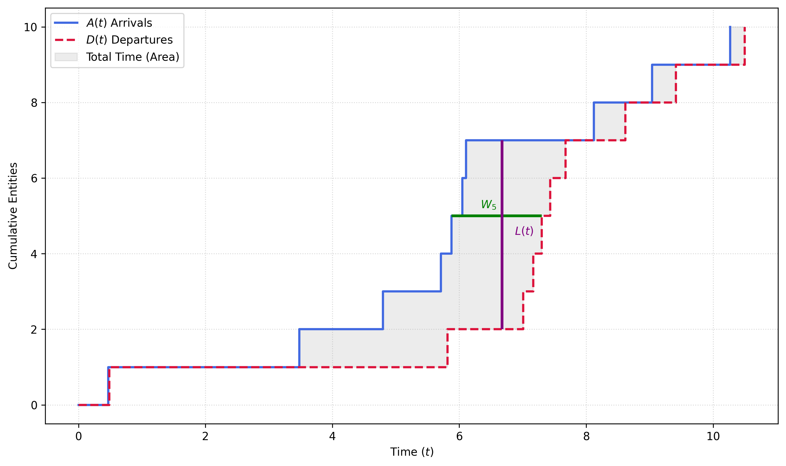

import random
import heapq
# --- Configuration ---
RANDOM_SEED = 42
TOTAL_TIME = 20000.0 # minutes
ARRIVAL_RATE = 5.0 / 60.0 # lambda (customers per minute)
SERVICE_RATE = 6.0 / 60.0 # mu (customers per minute)
WARMUP_TIME = 100.0 # Time to discard (Transient State)
clock = 0.0
queue = [] # Stores arrival times of waiting customers
server_busy = False
fel = [] # Future Event List
total_wait_time = 0.0
total_customers_served = 0
area_q_t = 0.0 # Area under Queue Length curve (for calculating Lq)
last_event_time = 0.0
warmup_cleared = False # Flag to track if we have reset the stats
def schedule_event(time, event_type):
"""Adds an event to the FEL, sorted by time."""
heapq.heappush(fel, (time, event_type))4 Discrete events and Queuing Theory
4.1 Introduction
In the previous chapters, we have considered mostly continuous simulation approaches. These approaches are well suited for situations where systems can be described using simple equations. However, there are situations that are either too complex to be modeled in such a way, or too expensive or dangerous to experiment with in the real world. Whether it is a hospital emergency room attempting to reduce patient wait times, a manufacturing plant trying to optimize throughput, or a computer network managing data packets, these systems share a common trait: they change state at specific, irregular points in time.
Unlike other modeling approaches that view the world as a continuous flow or a static snapshot, Discrete Event Simulation (DES) views the world as a sequence of distinct events—arrivals, departures, breakdowns, and completions—that occur at specific instants, triggering changes in the system’s state. DES becomes necessary when a system exhibits the following properties:
- The state of the system evolves over time. A decision made at time \(t\) affects the resources available at time \(t+1\).
- Entities (like customers, parts, data) compete for limited resources (counters, machines, bandwidth) leading to the formation of queues.
- The system is driven by randomness. Customers do not arrive at fixed intervals; machines do not take the exact same amount of time to process every part.
We utilize DES when analytical solutions are mathematically intractable. For example, calculating the average wait time in a bank with one line and one teller is a simple mathematical exercise. However, if that bank has varying arrival rates depending on the time of day, tellers who take lunch breaks, and customers who may leave (balk) if the line is too long, the mathematical formulas break down. DES allows us to mimic this complex reality inside a computer to answer “What if?” questions without disrupting actual operations.
Note that Monte Carlo simulation can be considered in general as static. It evaluates a problem at a single point in time or across a timeless dimension. For instance, estimating the value of \(\pi\) by dropping distinct pins on a grid is a Monte Carlo experiment. It provides a probabilistic outcome of a specific scenario but does not model how that scenario evolves. By contrast, DES is dynamic, creating a history of the system operation over a duration.
The mathematical foundation that represents the basis for DES is called Queuing Theory. It underpins the computational engine used by DES to solve complex simulation problems. Queuing Theory provides the analytical framework for understanding waiting lines. It offers exact mathematical formulas to predict performance measures such as server utilization or and average waiting times under specific, idealized assumptions (e.g., purely random arrivals and service times).
In this chapter, we will introduce the fundamentals of Queuing Theory that will serve as a framework to understand the principles of DES. While Queuing Theory provides the “laws of physics” for the system at hand, DES provides the laboratory in which we experiment with those laws under complex, realistic conditions.
4.2 Queuing Theory
Before we can build a valid discrete simulation model, we must understand the mathematical logic that governs the flow of entities. Queuing Theory is the study of waiting lines. It provides a set of analytical techniques used to describe the behavior of systems where entities arrive, wait for a resource, receive service, and depart. While we often associate queues with negative experiences—standing in line at a grocery store or waiting on hold for customer support—queuing theory views the queue not as a nuisance, but as a buffer. It is a necessary component that manages the mismatch between the irregular demand for service and the limited capacity to provide it. The fundamental goal of queuing theory is to quantify the trade-off between the cost of providing service (adding more servers) and the cost of waiting (lost time or unhappy customers).
4.2.1 Anatomy of a Queuing System
We now decompose a queueing system into its basic constituent processes: the arrival, the queue and the service mechanism.
- The arrival process defines how entities appear. In most queuing models, we assume that arrivals are random and measure them using the interarrival time, which is the time elapsed between two consecutive arrivals.
- The queuing mechanism defines how the holding area looks like where entities wait for service. This queue might have finite or infinite capacity, and function according to a specific principle or set of rules. The most common is a First-In, First-Out (FIFO) mechanism, where the first entity that arrived at the queue will get service first, and all other entities will advance by one place on the waiting line. However, other (less frequent) mechanisms might be used like LIFO (Last-In, Fist-Out), SIRO (Service In Random Order) or some other Priority schemes.
- The service mechanism defines how entities are processed, e.g. in a serial way (only one server) or with several concurrent servers. Additionally, this mechanism is characterized by a service time, which is usually stochastic as well.
Revisiting the Supermarket
Coming back to the supermarket example of Chapter 1, we can now identify the system’s components as follows:
- Arrival: Customers arrive randomly following exponentially distributed interarrival times.
- Queueing mechanism: Customers are put into an infinite waiting room (the queue has infinite capacity) and they are served sequentially, using a FIFO mechanism.
- Service: Once that the customers arrive at checkout, they are serviced by the next available of \(c\) cashiers. Service times are exponentially distributed.
In general, Queuing Theory provides a mathematical framework for ideal systems which can be handled analytically. However, this is not always the case. For these cases, DES offers a mechanistic approach to perform realistic system simulations. Nevertheless, Queuing Theory can also be used in this cases to provide a calibration benchmark or a “sanity check” for a simulation study by simplifying the model and checking that the results of the DES are the same than the ones predicted by the theory.
4.2.2 Kendall’s Notation
Queuing systems can vary in some specific ways: for instance, different arrival patterns, number of servers, etc. In order to describe these different modalities, we will use a formal notation called Kendall’s Notation. This notation is based on three components in the format \(A/B/c\). Each of these components represent the following characteristics:
- \(A\): Denotes the probability distribution of the arrival times.
- \(B\): Denotes the probability distribution of the service times.
- \(c\): Denotes the number of parallel channels available (e.g. number of servers).
Some symbols for common distributions used in practice for \(A\) and \(B\) include:
- \(M\): The memoryless (or Markovian) distribution. This implies for times the use of the exponential distribution, and for counts the Poisson distribution.
- \(D\): Denotes a deterministic mechanism where times are constant (zero variance). For instance, the service time in an automated car wash could take always the same 5 minutes per car.
- \(G\): Denotes any general distribution like Gaussian, Gamma, etc.
Some examples include the \(M/M/1\) model (exponential arrivals, exponential service times, and 1 server), \(M/M/c\) (same as before but with \(c\) servers in parallel) and \(M/D/1\) (exponential arrivals, fixed service times, and 1 server).
4.2.3 Key Performance Measures
We now describe some measures used to quantify how well the system performs. These metrics measure, in general, two competing objectives: the efficiency of the resource and the waiting time of the customer.
Let our input parameters be \(\lambda\) (the mean arrival rate, e.g. 10 customers per hour) and \(\mu\) (the mean service rate per server, e.g. a bank teller handling on average 15 customers per hour). In the following, we will use the term queue to refer to the waiting line itself, whereas queueing system refers to the whole system (the queue plus the service).
Utilization factor
We denote the fraction of time each server is busy, or utilization factor by \(\rho\). It measures how efficiently the servers are being used:
\[ \rho=\frac{\lambda}{c\mu} \]
Note that if the arrival rate exceeds the service rate, the queue size diverges to infinity (i.e. the condition \(\rho < 1\) is a sufficient condition for stability).
State metrics
We now assume that the system is in a steady state, i.e. the system has been running for long enough so that the initial conditions no longer influence current state probabilities. The state of the system is modeled as a random variable. Let \(P_n\) denote the steady state probability that there are exactly \(n\) entities in the system. We seek to minimize the following state metrics for any queuing system:
- \(L\): The length of the system, or average total number of waiting entities and those being served. This is the expected value of the number of entities:
\[ L=\sum_{n=0}^\infty n\cdot P_n \]
- \(L_q\): The length of the queue, or average number of entities in the waiting line. We define this quantity as the expected value of entities waiting in the line, excluding the ones being served:
\[ L_q = \sum_{n=c+1}^\infty (n-c)\cdot P_n \]
- \(W\): The total time in the system, or the average time an entity spends in the system (waiting + served). This is the sum of the expected time waiting in the queue plus the expected service time.
\[ W=E[\text{Waiting Time}]+E[\text{Service Time}] \]
- \(W_q\): The waiting time in queue, or average time an entity spends in the waiting line before being served. This can be expressed by:
\[ W_q = W - \frac{1}{\mu} \]
or the time waiting until one of the servers becomes free.
Little’s Law
One of the best known results in queuing theory is known as Little’s law, which established a fundamental relationship between the number of items in the system \(L\), the arrival rate \(\lambda\) and the average time spent in the system \(W\):
\[ L=\lambda\times W \tag{4.1}\]
This relation holds true regardless of the probability distributions involved. Figure 4.1 shows a geometric visualization of Little’s Law.

In this plot, we represent a realization of a \(M/M/1\) process where the cumulative arrivals are denoted by \(A(t)\) and the cumulative departures by \(D(t)\). From the horizontal perspective (the customer’s view), each horizontal section represents the arrival and departure of an entity (e.g. in the plot the green line represents the total time \(W_5\) that Entity 5 spent in the system). If we sum for all \(N\) customers, and we denote by \(W\) the average total time per customer, we get an estimation of the total system time (the grey area) of \(\approx N\times W\).
From the vertical perspective, each vertical section represents a moment in time, with its length equal to the number of entities in the system. If we now sum for all times, we also get an estimation of the total system time of \(\approx T \times L\), where \(T\) is the duration of the simulation and \(L\) is the average number of entities in the system. Equating both, we get:
\[ N\times W = T\times L \]
and therefore
\[ L = \frac{N}{T}\times W \]
where \(N/T\) is exactly the arrival rate \(\lambda\), and we thus get Equation 4.1.
4.2.4 Example: The M/M/1 Queue
As an example, we now calculate \(L\), \(L_q\), \(W\) and \(W_q\) explicitly for the case of an \(M/M/1\) queue. For the arrivals, we assume a Poisson process with rate \(\lambda\), exponential service times with rate \(\mu\) and 1 server. This results in an utilization of \(\rho=\lambda/\mu\) and we assume \(\rho<1\) so that the queue remains stable.
The steady state probability \(P_n\) becomes then
\[ P_n=(1-\rho)\rho^n \]
where \((1-\rho)\) is the probability that the system is empty. The length of the system \(L\) becomes then:
\[ L=\sum_{n=0}^\infty n\cdot P_n = \sum_{n=0}^\infty n\cdot (1-\rho)\rho^n=(1-\rho)\sum_{n=0}^\infty n \rho^n \]
because this is a geometric summation, we get
\[ L=(1-\rho)\frac{\rho}{(1-\rho)^2}=\frac{\rho}{(1-\rho)}=\frac{\lambda}{\mu-\lambda} \]
Using Little’s Law, we can now easily find \(W\):
\[ W=\frac{L}{\lambda}=\frac{1}{\mu-\lambda} \]
Similarly, the total time in the queue \(W_q\) can be calculated as follows:
\[ W_q = W-\frac{1}{\mu}=\frac{1}{\mu-\lambda}-\frac{1}{\mu}=\frac{\lambda}{\mu(\mu-\lambda)} \]
Applying Little’s Law for the queue (\(L_q=\lambda W_q\)), we get:
\[ L_q=\frac{\lambda^2}{\mu(\mu-\lambda)} \]
4.2.5 Summary
We have now seen the basic definitions behind Queuing Theory and the main performance measures that we seek to optimize. Depending on the actual form of the system (\(M/M/1\), \(M/M/c\), etc.) each measure takes a specific analytical form that can be calculated explicitly. However, with increasing complexity it becomes more difficult to get exact analytical expressions for these quantities. For these scenarios, we use DES as a simulation tool as we will explore in the next sections.
4.3 Discrete Event Simulation
While Queuing Theory provides the laws of physics for waiting lines, it has a significant limitation: it requires the world to be well-behaved. The moment we introduce real-world messiness—dynamic arrival rates (e.g., the lunch rush), complex routing logic (e.g., a part returning to a machine for rework), or resource dependencies (e.g., a machine needs both an operator and a tool)—the analytical formulas of Queuing Theory become mathematically unsolvable.
When the assumptions of Queuing Theory aren’t valid anymore, we turn to Discrete Event Simulation (DES). Discrete Event Simulation is a computational technique used to model the operation of a system as a discrete sequence of events in time. The defining characteristic of DES is how it handles state changes. In a continuous system (like water flowing into a tank), the state changes continuously every millisecond. In a discrete system, the state is piecewise constant. The number of people in a line remains exactly the same for a period of time, then changes instantaneously when a person arrives or departs. Therefore, a DES model assumes that nothing interesting happens between events. This assumption allows the computer to skip over periods of inactivity, making the simulation highly efficient.
4.3.1 Components of a DES Model
In order to define a DES model, we need to map the physical elements of the system to simulation components.
Entities: The dynamic objects that flow through the system (e.g. customers of a bank, data packets in a computer network, etc.). Entities arrive, move through the system, queue for resources, and leave the system (depart).
Attributes: Local data tags that describe the unique characteristics of a specific entity (e.g. the arrival time of an entity, the severity of a patient, etc). With attributes, we can treat in the simulation different entitites differently.
Resources: Stationary elements that provide service to entities and have limited capacity (e.g. tellers, machines, doctos, etc). Resources have normally at least two states: idle (free) and busy (occupied).
Global variables: Data tags that belong to the whole system instead of individual entities. They normally track the aggregated state of the system (e.g. the current length of the queue, number of busy servers, etc).
Events: An instantaneous occurrence that changes the state of the system. Events like arrivals and departures are considered as primary events, whereas other types of events (breakdowns, shift changes, etc) are considered as secondary events.
4.3.2 The DES Worldview
In a DES simulation, time is not considered to flow like a clock does. Between events, nothing interesting (from the point of view of the simulation) happens, so the next “tick” of the clock actually happens with the next event. In order to be able to manage these discrete jumps, it is usual for DES to maintain a Future Event List (FEL). Intuitively, this is a sort of “To-Do List” where all known future events are sorted chronologically.
The general simulation loop then becomes as follows:
- Check the FEL to find the event with the smalles time stamp.
- Advance the simulation clock to that time.
- Execute the logic associated with that event (e.g., free the server, update statistics, etc).
- Generate possible new events and place them into the FEL.
- Repeat until simulation end is reached.
4.3.3 Building a Simulation Study
A widely held misconception about DES is that “simulation” is synonymous with “coding.” In reality, writing the code is often the shortest phase of a project. A simulation study is a structured systems engineering process. If the conceptualization is flawed or the data is inaccurate, the most sophisticated code in the world will yield useless results.
To ensure reliability, a simulation study generally follows a standard five-step life cycle.
Problem formulation: Before we write a single line of code, we must define the objectives and scope of the simulation. What specific question are we trying to answer? (e.g. if we add a new machine, will that bring the total waiting time to under 5 seconds?). What is inside the model, and what is outside? (e.g. do we need to model that materials need some time for disposal, or is this done instantly?).
Data collection: This is typically the most time-consuming and difficult phase, where the goal is to gather real-world data to drive the model. This involves e.g. stopwatch studies, analyzing historical logs, and interviewing subject matter experts.
Model translation This is the phase where the conceptual model is translated into a computer representation (the “coding” phase). This involves defining the entities, resources, and event logic within the chosen simulation software (e.g., SimPy, Arena, AnyLogic, or C++).
Verification and validation: This is the quality control phase. Verification answers the question whether the code does what is intended to do. Comparing the model against Queuing Theory formulas is a primary method of verification. On the other hand, validation is concerned with accuracy, i.e. does the model behave like the real system?
Experimentation and analysis: Once the model is valid, it becomes a virtual laboratory. We run scenarios (e.g., “Increase arrival rate by 20%”) and analyze the resulting output statistics to make specific recommendations.
The Markovian Assumption
In Section 4.2, we relied heavily on the Exponential Distribution (Markovian) because it makes the mathematics solvable. However, in a simulation study, we are not bound by analytical convenience. Instead, we should and must use distributions that closer match reality.
Specifically, while arrivals do mostly follow a Poisson process (exponential interarrivals), scheduled arrivals do not. Regarding service times, humans are rarely exponential. A highly skilled worker might be consistent with low variance (Normal distribution), while machine repair times often follow a Weibull or Lognormal distribution. In this case, the main recommendation is to fit historical data to a probability curve. If we simply guess the distribution (e.g., assuming a machine always takes exactly 5 minutes when it actually varies between 2 and 12), the simulation results will underestimate the congestion caused by variance.
4.3.4 Analyzing the Output
Analyzing the output of a simulation is fundamentally different from reading a single number. Because DES is driven by random numbers, the output is also a random variable. Therfore, we need to express the results in the language of statistics and probability theory. Specifically, we need to use confidence intervals. E.g., instead of saying “The wait time is 10 minutes”, the simulation result should read something like: “We are 95% confident that the true average wait time lies between 9.2 and 10.8 minutes.” This requires running multiple replications (iterations) of the model to generate a statistically significant sample size, and using standard confidence interval tools to calculate the intervals.
It is also important to define a Warm-Up Period. In a steady-state simulation, the model usually starts “empty and idle.” This creates of course an initial bias. If we simulate a busy factory but start with zero parts in the system, the first few simulated hours will show misleadingly low queue times while the factory fills up. To correct this, the Warm-up Period (or transient period) is used to run the simulation for a specific time (e.g., 24 hours) to let the queues build up, delete the statistics from this period, and only collect data once the system reaches a stable state.
4.4 Comparative Study
To consolidate our understanding, we will now perform a comparative study. We will define a simple queuing system, solve it using the mathematical formulas derived in Section 4.2, and then build a Discrete Event Simulation (DES) in Python to solve it numerically.
Consider a small 24-hour IT Help Desk with a single technician. Support tickets arrive randomly following a Poisson process with a mean rate of 5 tickets per hour (\(\lambda=5\)). The technician resolves tickets with service times that are exponentially distributed with a mean rate of \(\mu=6\) tickets per hour. The queuing discipline is FIFO. Under these conditions, the system can be well described by a \(M/M/1\) queuing model.
Our goal is to determine the average waiting time in the queue (\(W_q\)) and the average number of tickets in the system (\(L\)). Using the formulas derived in Section 4.2, we get:
\[ \rho=\frac{5}{6}=0.8333\dots \]
So the technician is busy on average 83.3% of the time.
\[ \begin{aligned} L &= \frac{\rho}{1-\rho}=\frac{0.8333}{1-0.8333}=5 \\ W_q &= \frac{\lambda}{\mu(\mu-\lambda)}=\frac{5}{6(6-5)}=\frac{5}{6} \end{aligned} \]
The average number of tickets in the system is 5, and the average waiting time is \(5/6\) hours or 50 minutes. Let’s now build an equivalent DES system to replicate these results computationally. We start by defining the system parameters and some helpers:
The main simulation loop can be implemented as follows:
def run_simulation():
global clock, server_busy, total_customers_served, area_q_t, last_event_time, warmup_cleared
random.seed(RANDOM_SEED)
interarrival = random.expovariate(ARRIVAL_RATE)
schedule_event(clock + interarrival, 'ARRIVAL')
while clock < TOTAL_TIME and fel:
event_time, event_type = heapq.heappop(fel)
time_delta = event_time - last_event_time
queue_len = len(queue)
if server_busy:
queue_len += 1 # System Length = Queue + Service
area_q_t += queue_len * time_delta
clock = event_time
last_event_time = clock
if not warmup_cleared and clock > WARMUP_TIME:
area_q_t = 0.0
total_customers_served = 0
warmup_cleared = True
if event_type == 'ARRIVAL':
next_arrival = clock + random.expovariate(ARRIVAL_RATE)
schedule_event(next_arrival, 'ARRIVAL')
if not server_busy:
server_busy = True
service_time = random.expovariate(SERVICE_RATE)
schedule_event(clock + service_time, 'DEPARTURE')
else:
queue.append(clock)
elif event_type == 'DEPARTURE':
if warmup_cleared:
total_customers_served += 1
if len(queue) > 0:
_ = queue.pop(0) # Entity enters service
service_time = random.expovariate(SERVICE_RATE)
schedule_event(clock + service_time, 'DEPARTURE')
else:
server_busy = False
collection_duration = clock - WARMUP_TIME
L_sim = area_q_t / collection_duration
W_sim = L_sim / ARRIVAL_RATE
Wq_sim = W_sim - (1 / SERVICE_RATE)
print(f"--- Simulation Results (Steady State Only) ---")
print(f"Total Time: {TOTAL_TIME} | Warm-up: {WARMUP_TIME}")
print(f"Valid Data Duration: {collection_duration:.1f} min")
print(f"Total Customers Served (in valid period): {total_customers_served}")
print(f"-" * 30)
print(f"Simulated L (Avg in System): {L_sim:.4f} tickets")
print(f"Simulated Wq (Avg Wait in Queue): {Wq_sim:.4f} min")The FEL is implemented using the fel variable. We start by scheduling the first arrival and entering the main loop. We then extract the first element from the FEL. If the server happens to be busy, we queue the element and schedule the next arrival. Otherwise, we serve the element and schedule its departure from the system. The departure event schedules the next departure if there are still elements waiting in the queue, otherwise it sets the state variable server_busy again to False. Note that we are calculating L_sim (the simulated length of the system) by just calculating the area under the curve that describes the current length of the system and dividing by the total time to get the average. The other quantities are given by Little’s Law.
We now run the simulation
run_simulation()--- Simulation Results (Steady State Only) ---
Total Time: 20000.0 | Warm-up: 100.0
Valid Data Duration: 19927.2 min
Total Customers Served (in valid period): 1666
------------------------------
Simulated L (Avg in System): 5.5395 tickets
Simulated Wq (Avg Wait in Queue): 56.4742 minAs can be seen, the result are close to the theoretical 5 tickets and 50 minutes. The more steps we simulate, the closer will the system get to the true analytical results. Note that we are discarding the events that happened before WARMUP_TIME so that the system has enough time to leave the initial, empty state and reach a steady state.
However, what is then the point of DES, if we can calculate everything analytically? The reason is that, in practice, very often we can’t. For instance, imagine that additionally we have the rule that the technician takes a 10-minute break every 2 hours, but only if no high-priority tickets are waiting. Queuing Theory can’t handle this problem, so we need to resort to DES instead. In the simulation code, it would be enough to add some additional logic to model this case accurately.
4.5 Summary
In this chapter, we have explored the complementary relationship between the mathematical elegance of Queuing Theory and the computational power of Discrete Event Simulation (DES). We began by establishing the fundamental vocabulary of systems engineering: entities, resources, and queues. We learned that while Queuing Theory provides exact, closed-form solutions for performance metrics like \(L\) and \(W_q\), it is bounded by the assumptions. When a system involves complex routing, time-varying arrival rates, or resource dependencies, analytical formulas become intractable. This is where Discrete Event Simulation takes over. By modeling a system not as a continuous flow but as a sequence of distinct events managed by a Future Event List (FEL) and a Next-Event Time Advance clock, we can reconstruct complex reality inside a computer. However, we also demonstrated that simulation is not a replacement for theory, but an extension of it. Through the \(M/M/1\) Case Study, we showed that Queuing Theory serves a critical role as a verification tool. By simplifying a simulation model to match standard theoretical assumptions, we can mathematically validate the underlying code before re-introducing real-world complexities.
4.6 Exercises
Consider a cloud computing server that processes requests (jobs). The arrivals follow a Poisson distribution with a mean rate of \(\lambda\) jobs per minute, and the service times are exponentially distributed with a mean rate of \(\mu\) jobs per minute. Assume \(\lambda=4\) jobs/min and \(\mu=5\) jobs/min. Calculate the utilization factor \(\rho\), the average waiting time in the queue \(W_q\) and the average number of jobs in the system \(L\).
Due to a marketing campaign, the arrival rate increases slightly to \(\lambda=4.8\) jobs/min. The server speeds remains at \(\mu=5\). Calculate the new average waiting time in the queue \(W_q\). By what percentage did the waiting time increase? Compare it to the traffic increase and explain the difference.
Modify the provided Python code to simulate a \(M/M/3\) model instead (i.e. with 3 parallel servers). What needs to be changed in the code? Compare the simulated Average Waiting Time \(W_q\) in the case \(\mu=5\) with 3 servers and \(M/M/1\) with \(\mu=15\). Are they the same? Why?